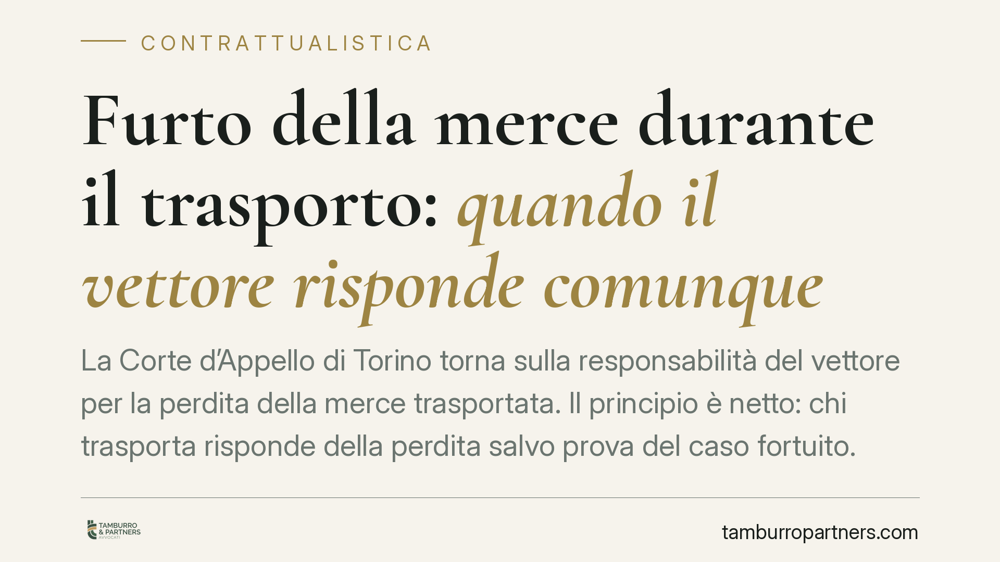

Furto della merce durante il trasporto: quando il vettore risponde comunque
La Corte d'Appello di Torino torna sulla responsabilità del vettore per la perdita della merce trasportata. Il principio è netto: chi trasporta risponde della perdita salvo prova del caso fortuito. E il furto, o persino la rapina, non liberano il vettore se avvenuti in circostanze che un operatore diligente avrebbe potuto prevedere ed evitare.

Il caso
La merce affidata a un vettore per il trasporto non arriva a destinazione: viene sottratta durante il tragitto. Il mittente chiede il risarcimento, il vettore si difende sostenendo di essere stato a sua volta vittima di un reato. È davvero sufficiente a liberarlo?
La Corte d'Appello di Torino risponde di no, o meglio: non basta invocare il furto. Occorre dimostrare che l'evento presentava i caratteri del caso fortuito, cioè imprevedibilità e inevitabilità con l'ordinaria diligenza.
Inquadramento normativo
Il riferimento è l'art. 1693 del codice civile, che disciplina la responsabilità del vettore per perdita e avaria della merce. La norma pone a carico del vettore una presunzione di responsabilità: dal momento in cui riceve i beni fino alla consegna, il vettore risponde della perdita e delle avarie, a meno che non provi che l'evento è derivato da caso fortuito, dalla natura o dai vizi della merce, dall'imballaggio o dal fatto del mittente o del destinatario.
In termini pratici, il mittente non deve provare la colpa del vettore. È il vettore a dover dimostrare la causa liberatoria. Si parla per questo di responsabilità "ex recepto": nasce dal semplice fatto di aver ricevuto la merce in custodia per il trasporto.
Il "caso fortuito" non è qualsiasi evento esterno. Deve trattarsi di un accadimento imprevedibile e inevitabile nonostante l'adozione di tutte le cautele esigibili da un operatore professionale del settore. Qui sta il punto decisivo della pronuncia torinese.
Perché il furto non basta
Il furto o la rapina sono, in astratto, fatti di terzi. Ma la giurisprudenza non li considera automaticamente caso fortuito. La sottrazione della merce durante il trasporto è, purtroppo, un rischio noto e statisticamente ricorrente. Un vettore professionale deve tenerne conto.
Di conseguenza, il giudice valuta le circostanze concrete: dove è stato lasciato il veicolo, per quanto tempo, in che zona, con quali sistemi antifurto, se il conducente ha rispettato percorsi e soste programmate, se il carico era particolarmente esposto. Se la sottrazione è avvenuta in un contesto prevedibile — ad esempio una sosta notturna in area non custodita in una zona a rischio — il vettore non può dirsi esente.
Diverso è il caso della rapina violenta e improvvisa, con armi, contro cui nessuna cautela ragionevole avrebbe potuto opporsi. In tali ipotesi la prova liberatoria può reggere. Ma l'onere di dimostrarlo, con precisione, resta sul vettore.
Implicazioni pratiche
Per chi opera nel trasporto merci — vettori, ma anche subvettori, che rispondono nei confronti del vettore principale — la pronuncia conferma un rischio d'impresa da gestire attivamente, non un'eventualità da subire.
Per il mittente, il quadro è più favorevole di quanto spesso si creda: non deve ricostruire la dinamica del furto né provare negligenze. Gli basta dimostrare la consegna della merce al vettore e la mancata riconsegna.
Attenzione anche alla catena contrattuale. Quando il trasporto è subappaltato, la responsabilità si trasferisce lungo la filiera secondo i rapporti tra vettore e subvettore. Chi affida deve verificare l'affidabilità e la copertura assicurativa di chi materialmente esegue.
Cosa fare in concreto
- Documentate la consegna e le condizioni della merce con lettera di vettura e verbali di carico dettagliati: sono la base probatoria di ogni contestazione.
- Verificate le clausole del contratto di trasporto su limiti di responsabilità, obblighi di custodia e percorsi: consigliamo di definire per iscritto soste, aree autorizzate e sistemi di sicurezza richiesti.
- Stipulate una copertura assicurativa adeguata al valore e alla tipologia del carico, controllando le esclusioni relative a furto e soste non custodite.
- In caso di subvettura, selezionate il subvettore con criteri verificabili e trasferite contrattualmente gli obblighi di diligenza e sicurezza.
- Dopo un evento di perdita, raccogliete subito le prove: denuncia, tracciati GPS, testimonianze, documentazione delle cautele adottate. È il materiale su cui si gioca la prova del caso fortuito.
---
*Contributo informativo a cura di Tamburro & Partners - Avv. Giuseppe Tamburro. Non costituisce parere legale.*
Ogni contratto ha il suo equilibrio.
Se vuoi una revisione delle clausole o una redazione su misura, scrivi allo studio. Ti rispondiamo entro un giorno lavorativo.